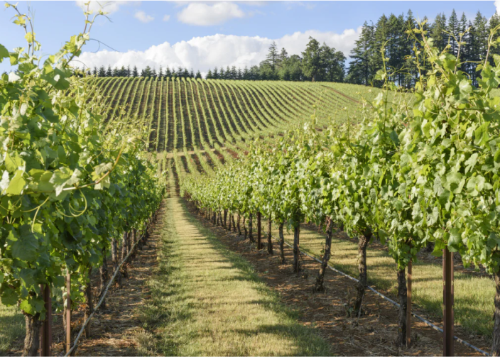
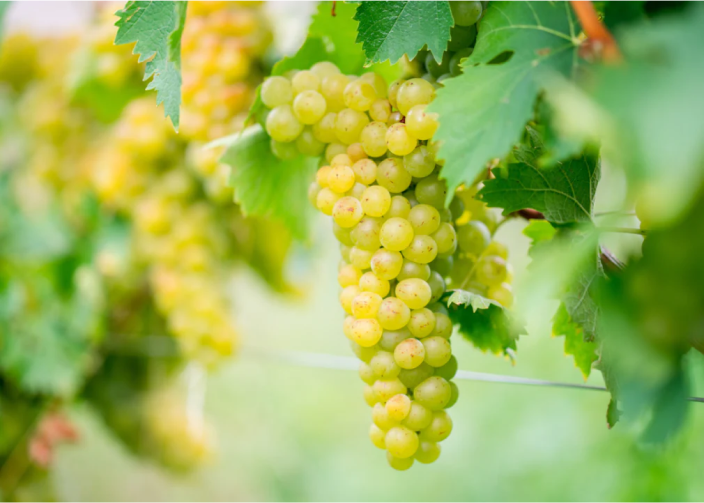
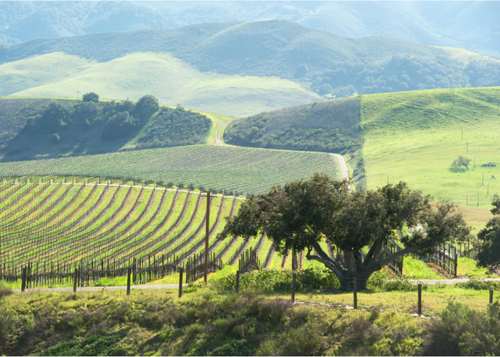

3 განვითარებადი ღვინის რეგიონი ამერიკის მასშტაბით
Aug 09, 2022
-

ულუპალაკუა, ჰავაი
ულუპალაკუა დაარსდა 2021 წლის 1 ივლისს. ულუპალაკუას ღვინის რეგიონი მდებარეობს ქ. კუნძული მაუი ჰავაიში, მაკენას მახლობლად, ჰალეაკალას ძირში, მიძინებული ვულკანი. ერთადერთი მოქმედი ღვინის ქარხანა არის Tedeschi Vineyards' MauiWine, რომელიც ღვინოს აწარმოებს ყურძენი ასევე ანანასი. ვენახი აწარმოებს რამდენიმე კლასიკურ ჯიშს, როგორიცაა გრენაში, syrah, malbec და chenin blanc. ასევე პოპულარულია ხილის ღვინოები, როგორიცაა Maui blanc, ა ანანასის ღვინო და ლეხუა, წვნიანი ჟოლოს ღვინო. ჰავაიში კიდევ ორი ვენახია: ვულკანის მეღვინეობა დიდ კუნძულზე და ოენო მეღვინეობა ოაჰუზე.
-

ვირჯინიის ნახევარკუნძული, ვირჯინია
ვირჯინიის ნახევარკუნძული მდებარეობს ჯეიმს სიტის, იორკის, ნიუ კენტის და ჩარლზ სიტი, ისევე როგორც რამდენიმე ქალაქი, როგორიცაა პოკუსონი, ჰემპტონი, ნიუპორტის ნიუსები და უილიამსბურგი. როდესაც ვირჯინიის ნახევარკუნძული დაარსდა 2021 წლის აგვისტოში, რეგიონი იყო უკვე ხუთი ღვინის ქარხანაა: Gauthier Vineyard, Williamsburg Winery, New Kent Winery, Saude Creek Vineyards და Upper Shirley Vineyards. მიუხედავად იმისა, რომ ვირჯინიაში ორი ათეული ყურძნის ჯიში იზრდება, მრავალი სხვა კლასიკური ყურძენი ვირჯინიის ნახევარკუნძულზე მოიცავს შარდონეს, რისლინგის, კაბერნე ფრანკს, მერლო და პეტი ვერდო. ასევე გთავაზობთ რამდენიმე უნიკალურ ჯიშს, მათ შორის viognier, petit მანსენგი, ალბარინო, მოურვედრე და ტანატი.
-

ვერდეს ველი, არიზონა
ვერდეს ველი, რომელიც დაარსდა 2021 წლის ნოემბერში, მდებარეობს იავაპაის ოლქში ჩრდილოეთით ფენიქსი. მასში ასევე მდებარეობს Verde Valley Wine Trail-ი, რომელიც მოიცავს 25 სხვადასხვა ღვინის ქარხანას რეგიონის ფარგლებში. რამდენიმეა Page Spring Cellars, Arizona Stronghold და Caduceus Cellars ბილიკზე მოსანახულებლად ყველაზე პოპულარული ღვინის ქარხნებიდან. ვენახების მფლობელები 40-ზე მეტ სხვადასხვა ჯიშის ყურძნის ჯიშს მოჰყავთ როგორც თეთრი, ასევე წითელი ღვინოებისთვის. პოპულარული თეთრი ყურძენი მოიცავს მალვაზია ბიანკას, ვიოგნიერს, შარდონეს, ვერმენტინოს, სეივალს. blanc და picpoul blanc. წითელი ყურძნისთვის პოპულარული ჯიშებია სირა, პეტიტი სირა, კაბერნე სოვინიონი, სანჯიოვეზი, ტანატი და ბარბერა.